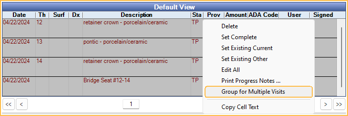

Procedure over Multiple Appointments
When Entering Treatment, group procedures that occur over multiple visits.
Group for Multiple Visits
Procedures can be grouped as a reminder to only send the claim when all procedures have been completed.
In the Chart Module, highlight the procedures, then right-click and select Group for Multiple Visits.
Alternatively, when setting up a Procedure Button, mark the button as Group for Multiple Visits.

When one of the grouped procedures is set complete, it will display with a status of Complete (In Process) in the Procedure Info window and Account Module. Once all procedures in the group have been set complete or procedures are ungrouped, the In Process status will be removed.
Once procedures are grouped, they can be ungrouped when needed. In the Chart Module, right-click on a grouped procedure and select View Multivisit Group(s).

The View Multi Visit Group window will open.

- Ungroup: Select procedures, then click to remove them from the group.
Insurance Estimates
If grouped treatment spans multiple benefit years, the current benefit year is used to calculate insurance estimates, rather than considering the benefit year when treatment began.
For example, if a patient met their annual max when completing their first visit, but schedules remaining treatment for the following benefit year, only the benefits used for the current year are considered, so treatment should no longer be over annual max.
Claims
Claims that include procedures grouped for multiple visits will be assigned a Claim Status of Hold for In Process.
If completed procedures are grouped with treatment planned procedures after a claim has been created and the claim status is Waiting to Send, Hold until Pri Received, or Unsent the claim status will be changed to Hold for In Process.
Once all procedures in the group have been set complete or remaining treatment planned procedures are ungrouped, the claim status will be changed to Waiting to Send. The claim status cannot be changed if any procedure status is Complete (In Process). See Edit Claim: Claim Status.
If a claim needs to be sent prior to other procedures in the group being completed, ungroup the completed procedures to send the claim.
When grouped, all procedure dates on the claim default to the date of the last procedure completed.
Fees
For crowns, bridges, dentures, partials, etc., there is usually a prep or impression appointment and then a seat or deliver appointment. The fee is either charged at the first appointment or the last appointment. Decide which method to use before setting up the Procedure Codes.
Fee due at first appointment: If the practice chooses to bill procedure fees at the first appointment, consider the following steps.
- For the first appointment, use the standard ADA procedure codes to bill any applicable fees.
- For the second appointment, use a special no-fee procedure code. Mark Do Not Bill Ins on the Procedure (Do not usually bill to ins can be set on the Procedure Code to check this by default). Set the procedure Amount to $0.
Fee due at the second or last appointment: If the practice chooses to bill procedure fees at the second or last appointment, consider the following steps. This method tends to more closely follow most insurance company policies.
- For the first appointment, use the no-fee procedure code.
- For the second appointment, use the standard ADA procedure codes to bill any applicable fees.
Logic
- When selecting procedures and grouping manually, using right-click Group for Multiple Visits, all procedures are grouped into one group.
- When charting procedures using a Procedure Button with Group for mutliple visits enabled:
- Procedure buttons with Auto Codes attached will be placed into one group, regardless of treatment area selected.
- Procedure buttons without Auto Codes attached will be placed into multiple groups, based on treatment area (e.g., tooth number).